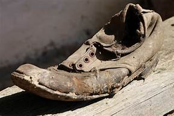
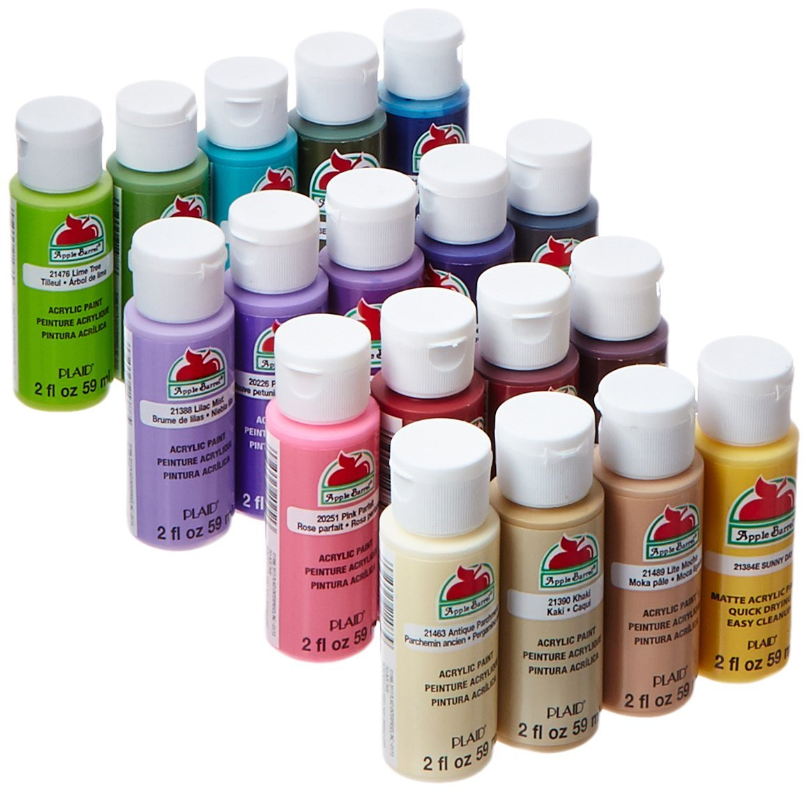
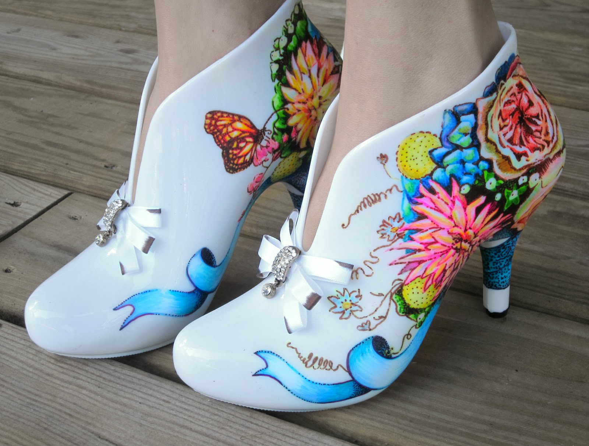

Have you ever wanted to get new shoes without having to buy new shoes?
Painting shoes is a great way to revamp your wardrobe without spending money. Using acrylic pant and art supplies, one can create their own designs on canvas shoes and sneakers.
Supplies
Canvas shoes

Acrylic primer
Acrylic paints

Painter's tape
Markers
Pencil
Paint brushes
Scotch Guard
Directions
Plan your design
Remove shoe laces
Apply painter's tape to any areas you do not want the paint to cover (such as the edge of the soles).
Prime the canvas areas you will be painting. Allow to dry completely. You want the canvas covered in primer, but not so thickly that you loose the texture.
Draw your design on the shoes using an HB pencil. Go lightly or the pencil will show through the paint
Fill in your designs with acrylic paint. Allow to dry completely.

Use marking pens to outline your designs and add details. Allow to dry.
Protect with Scotch Guard and follow the product instructions.